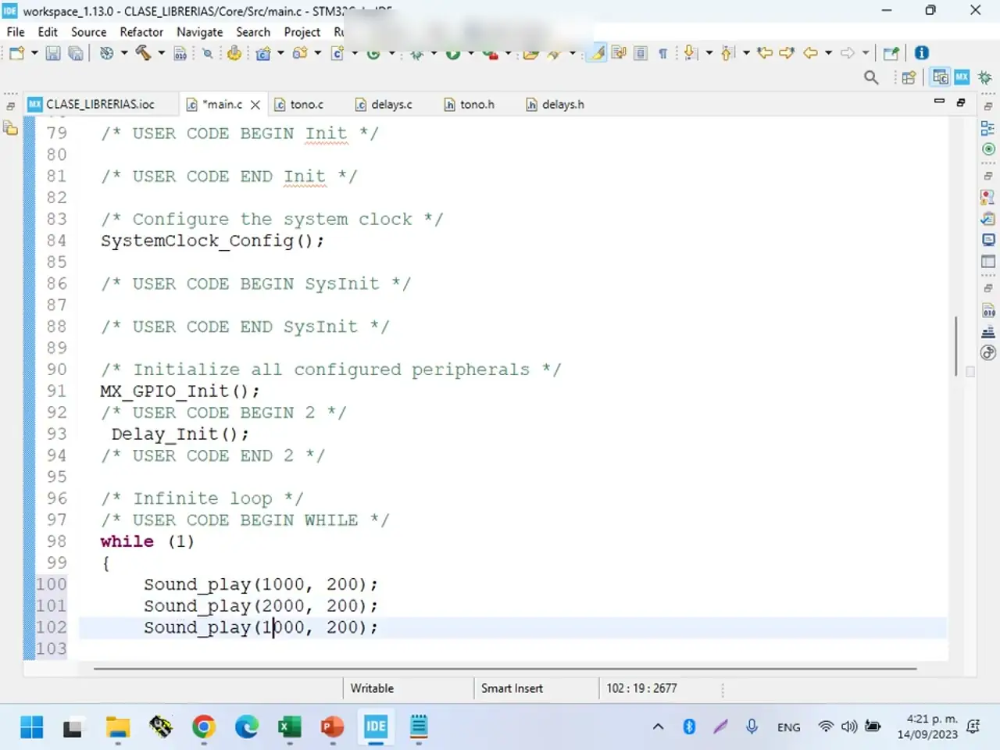

Crea un proyecto nuevo para el STM32F401CCUx.
Pon PB14 como GPIO_Output con la etiqueta PARLANTE (clic derecho → Enter User Label). El reloj se deja en 16 MHz.
Deja abierto solo este proyecto y compila.
Los procedimientos ayudan a ordenar el código, pero quedan dentro del main. Una librería saca esos procedimientos a archivos aparte para reutilizarlos en cualquier proyecto. En la clase se crea una carpeta Librerias dentro de Core, se copian las librerías de retardos (delays.c/.h) y de tonos (tono.c/.h), se agrega la carpeta a los include paths con un clic, se incluyen en el main y se usa Sound_play para tocar notas en un parlante conectado a PB14, simulado en Proteus.

Crea un proyecto nuevo para el STM32F401CCUx.
Pon PB14 como GPIO_Output con la etiqueta PARLANTE (clic derecho → Enter User Label). El reloj se deja en 16 MHz.
Deja abierto solo este proyecto y compila.
Una librería tiene dos archivos: el .c con el código y el .h con las definiciones (cabeceras de cada procedimiento).
Clic derecho sobre Core → New → Folder y llámala Librerias. Hay quien separa .c y .h en carpetas distintas; aquí van juntos para que sea más simple.
Copia ahí los archivos (Ctrl+C en el explorador y Ctrl+V sobre la carpeta). Para hacer una desde cero: clic derecho → New → Source File (.c) o Header File (.h).
tono.c tiene los mismos procedimientos que hicimos en clase (Sound_play y compañía). delays.c tiene varias formas de retardo en microsegundos, entre ellas la del contador DWT.
El .c siempre incluye a su propio .h (tono.c incluye tono.h).
El .h usa una guarda #ifndef / #define para no incluirse dos veces, e incluye main.h para tener acceso a los pines y a la HAL.
En delays.h, con #define se elige cuál función de retardo se usa como Delay_us y cuál como inicialización.
/* delays.h */
#ifndef LIBRERIAS_RETARDOS_H_
#define LIBRERIAS_RETARDOS_H_
#include "main.h"
#define delay_init delay_us_dwt_init // función de inicio usada
#define Delay_us delay_us_dwt // función de retardo usada
void Delay_ms(uint32_t ms);
#endifLa forma fácil: clic derecho sobre la carpeta Librerias → Add/Remove Include Path, marca las dos configuraciones (Debug y Release) y OK.
La forma manual: Properties → C/C++ Build → Settings → MCU GCC Compiler → Include paths → Add con la ruta de la carpeta.
En el main, en USER CODE BEGIN Includes, agrega la librería. Escribe #in y Ctrl+Espacio para que se complete.
Antes del while inicializa los retardos con Delay_Init().
Dentro del while ya puedes usar Sound_play(frecuencia, tiempo_ms).
/* USER CODE BEGIN Includes */
#include "tono.h"
/* USER CODE END Includes */
/* USER CODE BEGIN 2 */
Delay_Init();
/* USER CODE END 2 */
while (1)
{
Sound_play(1000, 200);
Sound_play(2000, 200);
Sound_play(1000, 200);
}Para el próximo proyecto solo copias la carpeta Librerias, la agregas al include path y la incluyes: no hay que pegar código en el main.
Genera el .hex (Properties → MCU Post build outputs) y compila.
En Proteus pon la Black Pill y un SPEAKER en PB14 a tierra. Carga el .hex desde la carpeta Debug.
Si sale un error de VDDA, en Design → Configure Power Rails pon VCC/VDD en 3.3 V y pasa VDDA a la lista de la derecha.
Dale Play y suenan las notas.
En un circuito real el parlante no va directo al pin: necesita un transistor. Aquí va directo solo para la simulación.